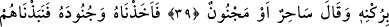
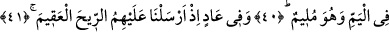
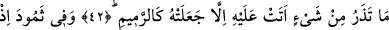
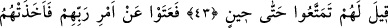
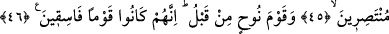

BAKIP DURURLARKEN
YILDIRIM ÇARPIVERDİ
38. Musa’da da (ibretler vardır). Onu apaçık bir delil ile Firavun’a göndermiştik.
39. Firavun ordusuyla birlikte yüz çevirmiş: «O, bir büyücüdür veya bir delidir»
demişti.
40. Nihâyet onu da ordularını da yakalayıp denize attık, bu sırada kendini kınayıp
duruyordu.
41. Âd kavminde de (ibretler vardır). Onlara kasıp kavuran rüzgârı göndermiştik.
42. Üzerinden geçtiği şeyi canlı bırakmıyor, onu kül edip savuruyordu.
43. Semûd kavminde de (ibretler vardır). Onlara: Bir süreye kadar faydalanın,
denmişti.
44. Rablerinin emrine karşı geldiler. Bu yüzden, bakıp dururlarken onları yıldırım
çarpıverdi.
45. Ayağa kalkacak güçleri kalmamış, yardım edenleri de olmamıştı.
46. Bunlardan önce de Nuh kavmini helâk etmiştik. Çünkü onlar yoldan çıkmış bir
toplum idiler.
“Mûsâ’da da” diye başlayan cümle, bir görüşe göre “kesinlikle inanmak isteyenler
için yeryüzünde âyetler vardır” (ez-Zâriyât 51/20) âyetine mâtuftur. Hz. İbrahim ve Hz.
Lût (a.s)’ın kıssaları da matuf ve ma’tufun aleyh arasındaki bir mu’tarıza cümlesi olup,
Rasûlullah (s.a.)’i müşriklerin yalanlamaları sebebiyle teselli etmek ve ona
düşmanlarının, Lût kavmi gibi helâk edilerek kendisinden uzaklaştırılacağını bildirmek
için getirilmiştir. Diğer bir görüşe göre bu cümle, önceki “acı azaptan korkanlar için
orada bir işâret bıraktık” (ez-Zâriyât 51/37) âyetine şu mânâ takdiriyle matuftur: “Biz
Mûsâ (a.s.)’ın Firavun’a gönderilme hâdisesinde ve onun ve kavminin, peşlerine düşen